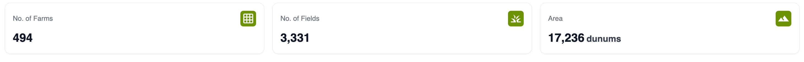
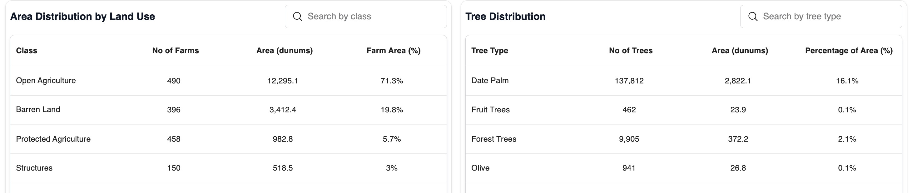
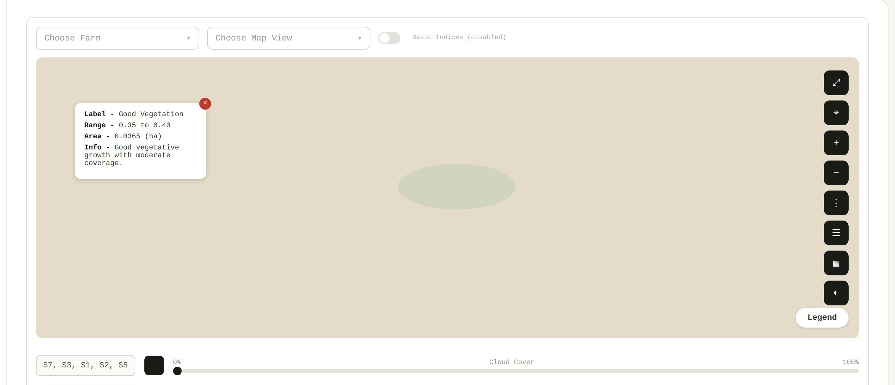
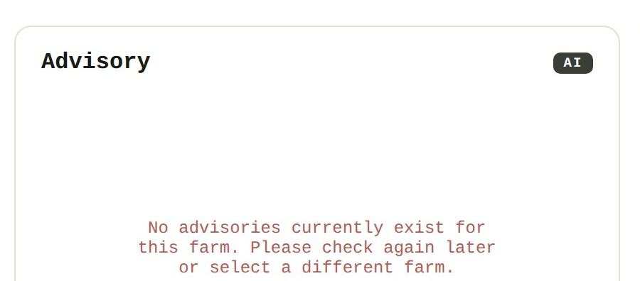
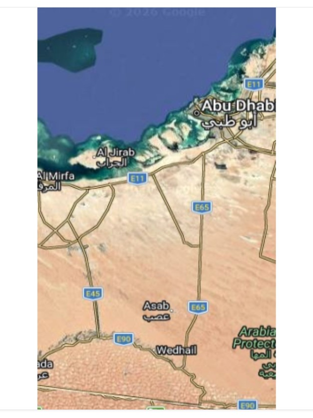
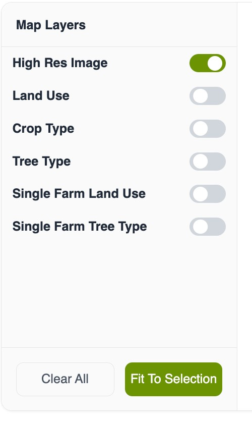

The map, coloured by the question on this page
The farms that need attention,
worst first
The side menu holds 10 items. Three of them are the work — Farms, Farm Monitoring and Violations — and the remaining seven are support and settings. Farms and Farm Monitoring sit next to each other, and neither name says which question it answers.
The six analyses we are contracted to deliver do not appear in the menu at all, because the current layout has nowhere to put them. The items are also not links, so no view can be bookmarked, sent to a colleague, or pasted into a report.
We would name every entry after the question it answers, and let the menu carry the work rather than the plumbing. Overview sits at the top and answers whether anything needs attention today. The six modules follow, each by name, so the menu lists exactly what the client is buying. Farm Analysis sits below them for the single-farm view, and account, help and settings move to the foot of the rail where people expect to find them. Nothing is removed. Each entry becomes a page with its own address, so any view can be linked in an email or a report.
The six modules become the menu, so the product lists what it does.
The first screen answers what exists, not how it is doing. Three counters report 494 farms, 3,331 fields and 17,236 dunums. They are correct, and they never change colour: they count the inventory rather than its condition, so they cannot say whether today is a normal day.
Six switches sit beside them and ask the user what they would like displayed, which assumes somebody already knows what to ask for. Until a switch is chosen, the map shows nothing about the farms at all.

The three counters: an inventory, not a condition.
We would lead with a verdict. One line saying how many areas need attention and which, then a card for each module carrying a plain status word and the number behind it. The map would take a single fixed colouring, so trouble appears without anybody choosing a layer first. The switches remain for the people who want them, one level further in.
4 of 6 areas need attention — Crop Monitoring, Palms & Fruit Trees, Irrigation Efficiency and Water Allocation.
The same six modules, each answering with a word before a number.
The two tables total the region by category: 490 farms of open agriculture, 396 of barren land, 137,812 date palms, 941 olives. The totals are useful in a report, but no individual farm appears in them and nothing is ordered by urgency.
An official who wants to know which farms to visit this week cannot produce that list from this screen. There is also no export anywhere in the product, so the answer cannot leave the browser.

Both tables aggregate by class. Neither names a farm or orders one above another.
We would add one ranked list, worst first, naming the farm. The table already exists in the product; what it needs is an order and an identity. A row would open that farm beside the map rather than on a separate page, so somebody keeps their place, and the list would export to a file so it can be circulated or worked through away from the screen.
| Farm | Owner | Area (dun) | Score | Status |
|---|---|---|---|---|
| #347 | Farm Owner 297 | 40.1 | 35 | Critical |
| #275 | Farm Owner 274 | 34.5 | 35 | Critical |
| #141 | Farm Owner 255 | 26.1 | 35 | Critical |
| #371 | Farm Owner 175 | 40.4 | 36 | Critical |
| #139 | Farm Owner 122 | 34.0 | 36 | Poor |
The same data, ordered by who needs attention, and able to leave as a file.
Two of the six map switches are named for a single farm, yet no page about a farm exists anywhere in the product. The nearest is Farm Monitoring, which works like an instrument: choose a farm, choose a map view, find a usable image among thirty dated captures by reading satellite codes and cloud cover, then scroll a long page of readings.
The one panel named like an answer, Advisory, reports that no advisories exist and asks the user to check again later.

Farm Monitoring opens on choices: a farm, a map view, a capture.

The panel named like an answer asks the user to check back later.
We would give a farm a record. It opens beside the map with the farm highlighted, states the conclusion in one sentence, then lists each module's reading. It ends with something to do — export the farm, or open the full analysis — so a visit starts from the screen rather than from somebody's own notes. The depth Farm Monitoring offers is kept, one level further in.
| Irrigation Efficiency | Critical | 35 |
| Water Allocation | Water-stressed | 70% |
| Palms & Fruit Trees | Fair | 77 |
| Crop Monitoring | Cultivated | 72% |
| Land Use & Structures | Open agriculture | — |
| Yield Forecast | Above expected | +13% |
The conclusion first, then every module's reading, then something to do.
The map is the largest element on the page, and it carries classification only: switch on a layer and it draws the class. It never carries condition, so nothing on it indicates which farms are doing badly.
At regional zoom the problem compounds. Farms are drawn as one aggregate, and a handful of critical farms inside a healthy group disappear into the average — which is the thing somebody opened the map to find.

The map at rest: boundaries and a basemap, with no reading of condition.
We would colour each farm by its condition, and let the worst case win where farms are grouped, with a count of how many need attention. One legend, and the same three colours everywhere in the product: red needs action, amber watch, green fine. The map then answers where the problem is before anybody reads a number.
Colour carries the condition, so a problem is visible before it is read.
The full crop and tree taxonomy is a display mode. Switch it on and the map redraws by class; switch it off and it goes away. It cannot be used to narrow anything: there is no way to ask the product to show only the farms growing date palms and then read the rest of the screen against that question.
That taxonomy is a substantial part of the analysis being delivered, and at the moment it is something to look at once.

The taxonomy is offered as something to switch on, not something to ask with.
We would turn it into a filter. It sits under the legend, closed by default so the screen stays quiet. Ticking date palms narrows the map, the counts, the cards and the ranked list together, so every number on screen answers the same question. Each module filters by the taxonomy it is about — crop monitoring by field crops, palms by trees. The taxonomy stops being a view and becomes the way somebody asks a question.
One tick moves the map, the counts, the cards and the list at the same time.
The six points above have one cause. The product was built as a single workspace, and every new analysis has to arrive in it as another switch and another table. With six modules coming, that screen cannot hold them, and building each module its own page would produce six products rather than one.
We would give the product three depths, and put every module inside the same frame.
The same frame at every depth: the menu on the left, the answer on top, the map in the middle, the list docked below.
Is anything wrong today? One screen, answered in a sentence and six words.
Which farms need attention? One module owns the page and ranks its answer.
What is happening here? Everything about one holding, ending in an action.
Somebody learns the frame once and then knows all six modules. Adding the seventh means adding a set of columns and a map colouring, rather than designing another page — so the next module becomes cheaper to build rather than more expensive.